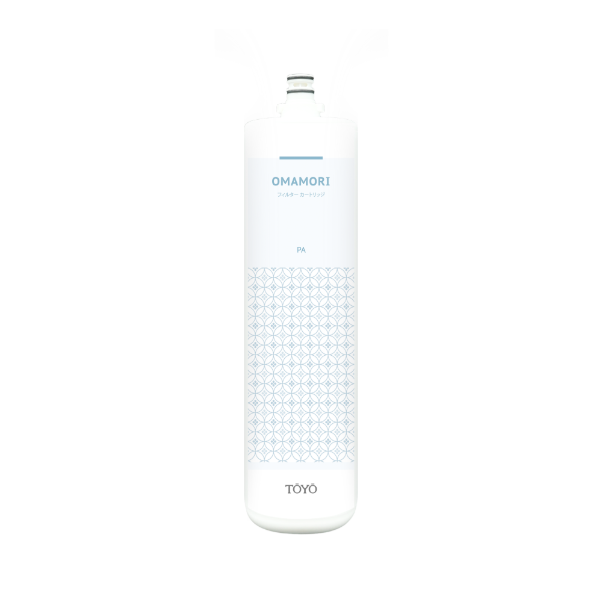
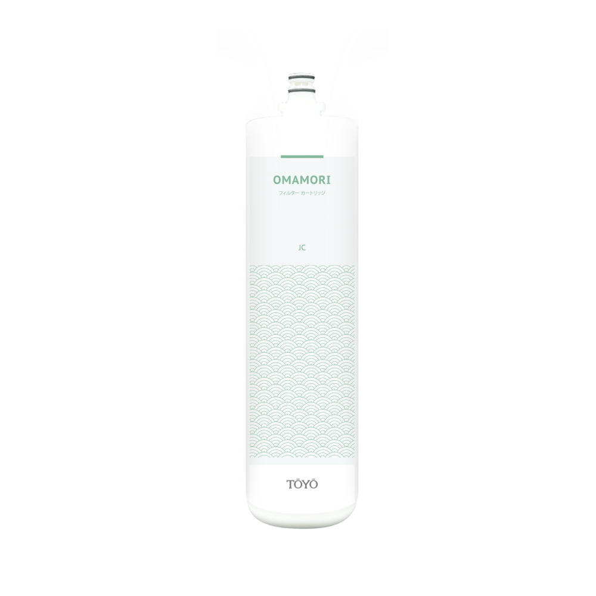

櫥下型 鹼性離子水生成器＋熱飲器TYH-806S
商品描述
- All-IN-ONE 智能操控龍頭
- 櫥下主機省空間
- 保健鹼性離子水
- 5種酸鹼水質調整
- 冷熱好水一開就來
- 全自動濾心更換提醒功能
- 全自動逆洗系統
- 通過SGS, CE檢驗
- 經國家能源分級檢驗為2級省電
【獨立熱水淨水系統】
- 安全- SUS304不鏽鋼龍頭，龍頭配備安全鎖開關，使用熱水更安全。
- 節能- 經國家能源分級檢驗為2級省電
- 便利- 一開熱水即來，溫度可調整60°C到98°C
- 環保- 環保節能循環槽，節能省水。
【標準配件】
淨水御守 – 安心生飲前置淨水組OMAMORI – 2S
通過台灣SGS國家生飲認證、濾材符合美國NSF42標準、美國FDA檢測項目、日本食品分析中心JFRL認證。添加日本銀離子，長效抑菌更安心。
濾料日本原裝 三大核心技術 :
- - 日本GE-Techno陶瓷濾料
- - 日本GE-Techno銀離子活性碳纖維
- - 日本エルベス不織布
可以除菌抑菌、濾除三氯甲烷、揮發性有機物、有害化學物質、水中重金屬鉛、銅、汞、石綿、農藥、泥沙雜質、塑膠微粒等，過濾孔徑為1Microns。
【注意事項】
- 適用一般自來水(請勿使用山泉水、地下水)
- 水壓不足的場合建議另加購加壓馬達
- 管路如需水電施工，費用另計
【保養及維護】
建議使用3年以上，需回原廠進行保養維護，將清洗電解槽、清洗熱缸、更換管線零配件。未使用靜置多日，使用前請先排放水3-5分鐘，亦可通知原廠進行保養維護，預約客服中心0800-090-881到府服務。
商品內容
- TYH-806S 主機X 1
- TYH-806S 龍頭X 1
- OMAMORI – 2S淨水御守 -安心生飲前置淨水組
- OMAMORI – PA 雜質御守濾心 X 1
- OMAMORI – JC 全效能御守濾心 X 1
商品規格
電解系統
| 型號 | 櫥下型鹼性離子水生成器+熱飲系統 TYH-806 |
| 電源 | AC 110V 50-60Hz |
| 消耗電力 | 最大250W |
| 尺寸 | W17cm X D37cm X H32cm |
| 重量 | 約8.5KG |
| 電解方式 | 自來水過濾供給連續生成 |
| 電解能力切換 | 鹼性離子水9段/中性淨水1段/酸性離子水1段 |
| 連續使用電解時間 | 常溫時連續通水30分鐘 |
| 電解生成量 | 3～5Ｌ/分(視原水水壓而定) |
| 電極洗淨 | 自動提醒、手動洗淨（可設定洗淨量） |
出水龍頭
| 尺寸 | 外徑4.7cm X H21.7cm |
| 重量 | 約1.6KG |
| 水龍頭安裝孔徑 | 孔徑尺寸3.5CM |
| 材質 | 低鉛銅鍍鉻 |
| 給止水裝置 | 陶瓷軸心 |
熱飲系統
| 適用水壓 | 0.5KG～3.5KG |
| 容量 | 2.4L |
| 溫度控制 | 50 ℃ ～98 ℃ |
| 耗電量 | 0.75KWH / 24H |
| 使用電壓 | AC 110V（另可指定AC 220V） |
| 加熱管功率 | 最大780W（AC 220V時1300W） |
| 內膽材料 | 不鏽鋼ST - 304 |
| 定額電流 | 6A |
週邊配件

OMAMORI – PA

OMAMORI – JC